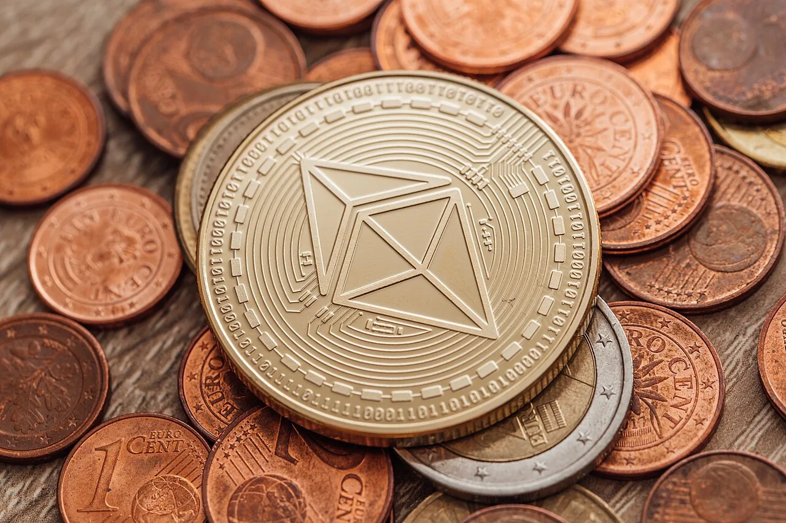

분배율은 공짜 이자가 아닙니다

이더리움 스테이킹 ETF가 주목받는 이유는 단순합니다. 현물 이더 가격 노출에 더해 네트워크 검증 보상을 받을 수 있기 때문입니다. 하지만 이 보상은 은행 예금 이자와 다릅니다. 검증인이 네트워크 운영에 참여하고, 그 대가로 프로토콜 보상을 받는 구조입니다. 수익률이 보인다고 해서 위험이 사라지는 것은 아닙니다.
투자자는 먼저 보상의 원천을 이해해야 합니다. 스테이킹 보상은 네트워크 활동, 검증인 수, 수수료 환경, 프로토콜 정책에 따라 달라집니다. ETF가 이더를 얼마나 스테이킹하는지, 보상을 현금으로 분배하는지 재투자하는지, 비용을 뺀 뒤 실제 투자자에게 얼마가 남는지에 따라 체감 수익률은 달라집니다. 광고 문구보다 운용 문서가 중요합니다.
수탁은 가격보다 먼저 무너질 수 있습니다
크립토 ETF에서 수탁은 단순 보관이 아닙니다. 이더를 안전하게 보관하면서도 일부를 검증인 운영에 연결해야 합니다. 이 과정에는 키 관리, 콜드월렛과 핫월렛의 경계, 위임 스테이킹 계약, 보상 수취, 출금 대기 관리가 들어갑니다. 어느 한 지점이 허술하면 가격 상승과 별개로 운영 위험이 커집니다.
특히 스테이킹은 출금 대기와 유동성 문제가 함께 따라옵니다. ETF는 투자자가 장중에 사고팔 수 있어야 하지만, 네트워크에서 스테이킹 해제는 즉시 끝나지 않을 수 있습니다. 운용사는 현금, 비스테이킹 이더, 시장조성 구조로 이 간극을 관리해야 합니다. 그래서 스테이킹 비율이 높다고 무조건 좋은 것은 아닙니다. 유동성 완충 장치가 함께 있어야 합니다.
검증인 실수는 비용이 됩니다
스테이킹에는 슬래싱이라는 위험이 있습니다. 검증인이 네트워크 규칙을 어기거나 중대한 운영 실수를 하면 일부 자산이 벌칙으로 줄어들 수 있습니다. 대형 운용사가 직접 검증인을 운영하든, 전문 운영자에게 맡기든 이 위험은 사라지지 않습니다. 투자자는 누가 검증인을 운영하는지, 장애 대응과 보험 또는 보상 정책이 있는지 확인해야 합니다.
운용사가 여러 검증인 사업자에 분산 위탁하면 단일 장애 위험은 줄어듭니다. 그러나 관리 구조는 복잡해집니다. 한 사업자의 높은 성과만 보고 몰아주면 운영 집중도가 커집니다. 반대로 너무 넓게 분산하면 비용과 감시 부담이 늘어납니다. 좋은 ETF 구조는 높은 분배율보다 사고가 났을 때 손실이 어디에 배분되는지 명확한 구조입니다.
투자자는 수익률 표보다 약관을 봐야 합니다
이더리움 스테이킹 ETF를 볼 때 확인할 항목은 네 가지입니다. 첫째, 총 이더 중 실제 스테이킹 비율입니다. 둘째, 보상에서 운용보수와 검증인 수수료를 뺀 순수익률입니다. 셋째, 스테이킹 해제 대기와 대량 환매가 겹칠 때의 유동성 관리입니다. 넷째, 슬래싱과 운영 장애가 발생했을 때 손실을 누가 부담하는지입니다.
이 글은 투자 조언이 아닙니다. 이더 가격은 변동성이 크고, 스테이킹 보상은 가격 하락을 막아 주지 않습니다. 다만 ETF 구조가 성숙해질수록 시장은 “이더가 오를까”뿐 아니라 “보유 과정에서 생기는 보상을 얼마나 안전하게 전달하나”를 묻게 됩니다. 스테이킹 ETF의 경쟁력은 분배율 숫자가 아니라 수탁과 검증인 운영의 투명성에서 나옵니다.
수익은 검증인에서 나오고 위험도 거기서 나옵니다
이더리움 스테이킹 ETF가 주목받는 이유는 단순합니다. 투자자는 가격 상승뿐 아니라 네트워크 보상까지 기대할 수 있습니다. 하지만 이 보상은 예금 이자가 아닙니다. 검증인이 네트워크에 참여하고, 규칙을 지키고, 기술적 장애 없이 운영될 때 얻는 보상입니다. 그래서 분배율 숫자만 보면 위험의 절반을 놓치게 됩니다.
가장 먼저 볼 것은 수탁 구조입니다. ETF가 보유한 이더리움을 누가 보관하고, 스테이킹 권한을 누가 행사하며, 장애나 제재 상황에서 어떤 절차로 대응하는지가 중요합니다. 지갑 키 관리와 검증인 운영이 분리되어 있는지, 특정 사업자에게 지나치게 몰려 있지 않은지도 확인해야 합니다.
스테이킹에는 슬래싱 위험이 있습니다. 검증인이 네트워크 규칙을 어기거나 중복 서명 같은 문제가 생기면 일부 자산이 깎일 수 있습니다. 대형 기관은 이 위험을 낮추기 위해 여러 검증인과 운영사를 나누겠지만, 완전히 없앨 수는 없습니다. ETF 설명서에서 이 위험을 어떻게 배분하는지가 핵심입니다.
유동성도 문제입니다. 투자자는 ETF를 시장에서 바로 사고팔 수 있지만, 실제 기초자산의 스테이킹 해제에는 시간이 걸릴 수 있습니다. 시장이 크게 흔들릴 때 환매와 스테이킹 해제 시간이 엇갈리면 가격 괴리가 생길 수 있습니다. 이더리움 ETF는 현물 ETF처럼 보이지만 운영 면에서는 더 복잡합니다.
따라서 승인 여부만 따라가면 부족합니다. 보상 분배 방식, 수수료, 검증인 분산, 슬래싱 처리, 유동성 관리가 함께 공개되어야 합니다. 이 조건이 투명해질수록 상품의 신뢰가 높아지고, 불분명할수록 높은 분배율은 오히려 불안한 숫자가 될 수 있습니다.
관련 영상
블랙록의 승부수 이더리움 스테이킹 ETF 미국 상륙 초읽기
스테이킹 ETF는 크립토가 금융상품 언어로 번역되는 과정입니다. 번역이 잘되려면 수익률보다 보관, 운영, 유동성, 사고 처리 기준이 먼저 선명해야 합니다.
이 상품을 살펴보는 투자자는 예상 분배율이 높다는 이유만으로 판단하면 안 됩니다. 보상이 어디서 나오고, 그 보상을 얻기 위해 어떤 운영 위험을 떠안는지 확인해야 합니다. 특히 수탁사가 검증인 운영을 직접 하는지, 여러 운영사로 나누는지, 슬래싱 손실이 생기면 투자자에게 어떻게 반영되는지 문서로 확인할 필요가 있습니다. 이더리움 스테이킹 ETF는 가격 노출과 네트워크 보상이 결합된 상품입니다. 구조가 투명하면 장기 자금이 들어올 수 있지만, 운영 설명이 부족하면 높은 보상률은 오히려 불확실성을 키우는 숫자가 됩니다.
규제기관이 보려는 것도 투자자 보호입니다. 스테이킹 보상이 안정적인 현금흐름처럼 홍보되면 오해가 생길 수 있기 때문입니다. 보상은 네트워크 상태와 운영 성과에 따라 달라지고, 수수료를 제하고 나면 투자자가 받는 금액은 더 줄어듭니다. 또한 세금 처리와 회계 처리도 간단하지 않을 수 있습니다. 상품이 대중화될수록 설명은 더 쉬워져야 하지만, 구조 자체는 더 투명해야 합니다.
투자자는 상품 이름에 붙은 ETF라는 익숙함에 기대기보다 그 안의 운영 장치를 봐야 합니다. 익숙한 포장 안에 낯선 검증인 위험이 들어 있다는 점이 이 상품의 가장 큰 특징입니다.